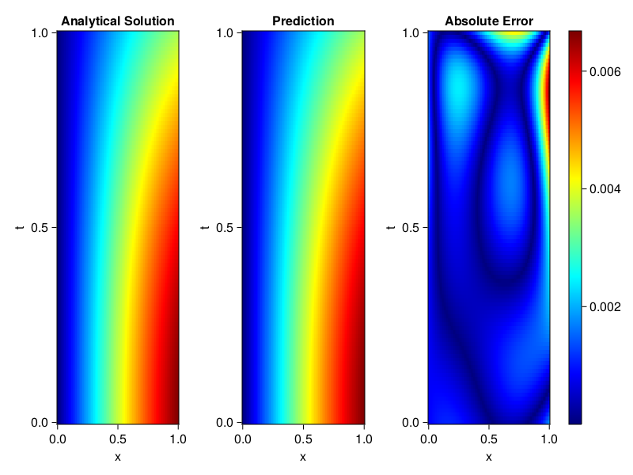
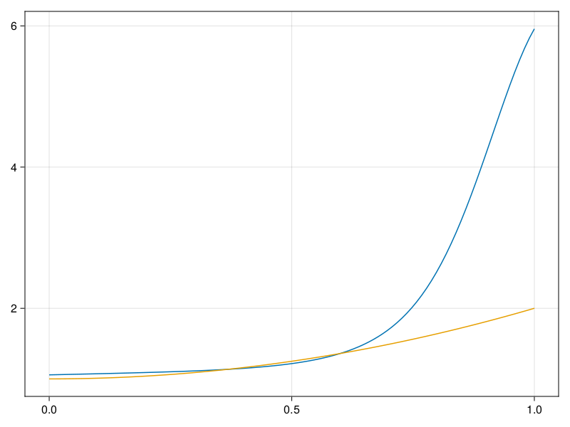

Inverse problem for the wave equation with unknown velocity field
We are going to sovle the wave equation.
using Sophon, ModelingToolkit, IntervalSets
using Optimization, OptimizationOptimJL
@parameters x, t
@variables u(..), c(..)
Dₜ = Differential(t)
Dₜ² = Differential(t)^2
Dₓ² = Differential(x)^2
s(x,t) = abs2(x) * sin(x) * cos(t)
eq = Dₜ²(u(x,t)) ~ c(x) * Dₓ²(u(x,t)) + s(x,t)
bcs = [u(x, 0) ~ sin(x),
Dₜ(u(x, 0)) ~ 0,
u(0, t) ~ 0,
u(1, t) ~ sin(1) * cos(t)]
domains = [t ∈ Interval(0.0, 1.0),
x ∈ Interval(0.0, 1.0)]
@named wave = PDESystem(eq, bcs, domains, [t,x], [u(x,t),c(x)])\[ \begin{align} \frac{\mathrm{d}}{\mathrm{d}t} \frac{\mathrm{d}}{\mathrm{d}t} u\left( x, t \right) =& c\left( x \right) \frac{\mathrm{d}}{\mathrm{d}x} \frac{\mathrm{d}}{\mathrm{d}x} u\left( x, t \right) + \cos\left( t \right) \left|x\right|^{2} \sin\left( x \right) \end{align} \]
Here the velocity field $c(x)$ is unknown, we will approximate it with a neural network.
pinn = PINN(u = FullyConnected((2,16,16,16,1), sin),
c = FullyConnected((1,16,16,1), tanh))
sampler = QuasiRandomSampler(500,100)
strategy = NonAdaptiveTraining(1, (10,10,1,1))NonAdaptiveTraining{Int64, NTuple{4, Int64}}(1, (10, 10, 1, 1))Next we generate some data of $u(x,t)$. Here we place two sensors at $x=0.1$ and $x=0.5$.
ū(x,t) = sin(x) * cos(t)
x_data = hcat(fill(0.1, 1, 50), fill(0.5, 1, 50))
t_data = repeat(range(0.0, 1.0, length = 50),2)'
input_data = [x_data; t_data]
u_data = ū.(x_data, t_data)1×100 Matrix{Float64}:
0.0998334 0.0998126 0.0997503 0.0996464 … 0.275281 0.267213 0.259035Finally we construct the inverse problem and solve it.
additional_loss(phi, θ) = sum(abs2, phi.u(input_data, θ.u) .- u_data)
prob = Sophon.discretize(wave, pinn, sampler, strategy; additional_loss=additional_loss)
@time res = Optimization.solve(prob, BFGS(), maxiters=1000)u: ComponentVector{Float64}(u = (layer_1 = (weight = [0.22174489395068397 0.3842189652639927; -0.06963751126642002 1.7199779733856908; … ; 0.054991359100637134 0.40889585563708447; 0.10039360277037722 0.7254510890685978], bias = [0.20686588715801568; -0.7025718533790657; … ; 0.32443701252116597; -0.16746949495242316;;]), layer_2 = (weight = [-0.1777412992424641 0.22652629826018078 … 0.22786764021359351 1.1641364831940206; -0.47719464939283796 -0.12148936120507003 … -0.18238263246760383 0.6099226776365836; … ; 0.1163457752500969 0.6739872354770099 … -0.6028327303364707 -0.6280021949221709; 0.5321443107222636 1.1617128078951322 … -0.14081766861862843 -0.7725762505474765], bias = [0.22424407536506064; -0.6637444927477038; … ; -0.2389647682552585; -0.3091458073481158;;]), layer_3 = (weight = [0.573311310336025 -0.14226785384487217 … -0.16533994433610613 -0.008935941664387872; 0.30289899661908304 0.4006477725699127 … -0.390877714107767 1.2420413507878902; … ; 0.04791113471113666 0.6306676218544178 … -0.07436889116649435 -0.468120368144563; -0.31404604333082803 0.015154435583302307 … -0.28953174073103355 -0.3253310017640973], bias = [0.23900341970238495; -0.3659502393041099; … ; 0.4869498661844306; 0.23413339334781888;;]), layer_4 = (weight = [0.3941498232283348 0.35118309527882063 … -0.04484259651060235 0.3576336688470886], bias = [-0.4871012322639741;;])), c = (layer_1 = (weight = [1.239330341477028; -1.4553792245999755; … ; -1.5441278651746022; 0.2956665702109292;;], bias = [-1.6938232135881324; 2.008710878774222; … ; 1.899011167383085; 1.0652921636463006;;]), layer_2 = (weight = [0.47255350830422316 0.11018746493213596 … -1.0080749535228624 0.05624395375475639; -0.9885004110734485 0.9907918192983305 … 1.1778873760359299 -0.5109970929218204; … ; 0.7866763067385489 -0.2859409085133531 … 0.054581095686327234 0.39940678408236424; 0.4495642383405342 -0.5712781964343878 … -0.3286205817890613 0.22830356536245733], bias = [-0.22403983691308643; 0.18970739988682242; … ; -0.24351722173043933; 0.5911165199990147;;]), layer_3 = (weight = [-2.4472498919127155 3.1015375728148142 … -2.7191730708570603 -0.7594759328881503], bias = [-2.929811191206053;;])))Let's visualize the predictted solution and inferred velocity
using CairoMakie
ts = range(0, 1; length=100)
xs = range(0, 1; length=100)
u_pred = [pinn.phi.u([x, t], res.u.u)[1] for x in xs, t in ts]
c_pred = [pinn.phi.c([x], res.u.c)[1] for x in xs]
u_true = [ū(x, t) for x in xs, t in ts]
c_true = 1 .+ abs2.(xs) |> vec
axis = (xlabel="x", ylabel="t", title="Analytical Solution")
fig, ax1, hm1 = heatmap(xs, ts, u_true, axis=axis; colormap=:jet)
ax2, hm2= heatmap(fig[1, end+1], xs, ts, u_pred, axis= merge(axis, (;title = "Prediction")); colormap=:jet)
ax3, hm3 = heatmap(fig[1, end+1], xs, ts, abs.(u_true .- u_pred), axis= merge(axis, (;title = "Absolute Error")); colormap=:jet)
Colorbar(fig[:, end+1], hm3)
fig
fig, ax = lines(xs, c_pred)
lines!(ax, xs, c_true)
fig